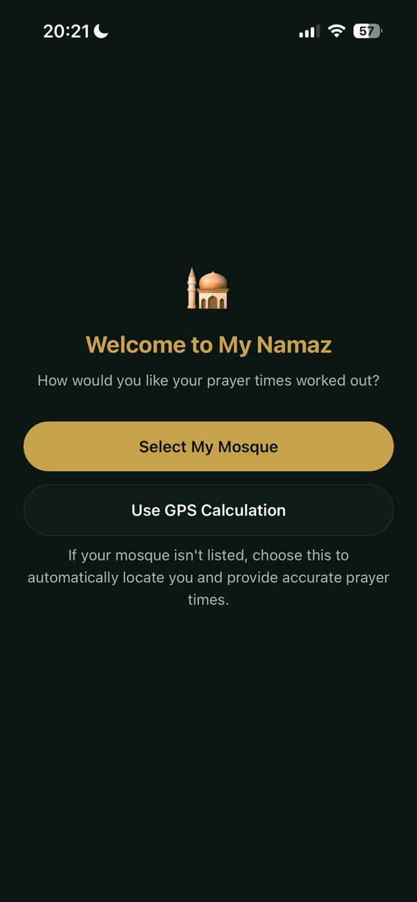
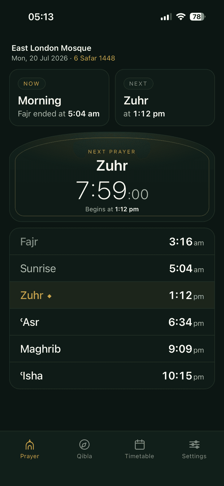
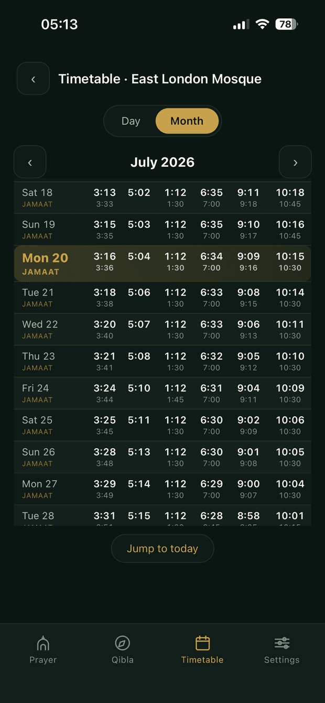
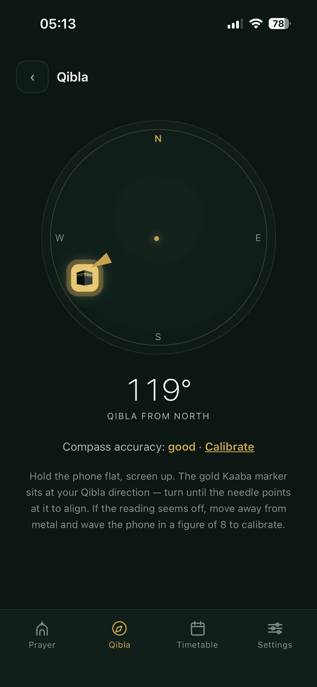
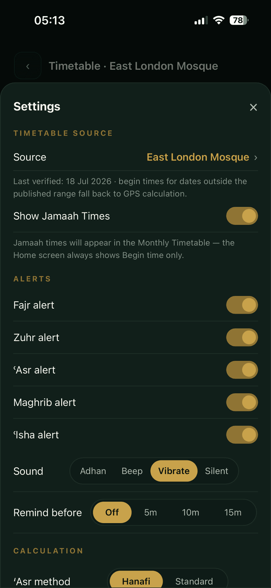

A UK mosque prayer timetable app, built especially for smaller mosques going digital. Pick your mosque and see its actual published times — not a generic calculation.

Larger mosques have their own apps. Smaller mosques cannot afford one — and their congregations end up using generic prayer apps that don't reflect the actual times used at their local mosque. My Namaz exists to close that gap.
We find, transcribe and verify each mosque's published timetable ourselves — currently 13 verified UK mosques, and growing. Pick yours and see its actual published times, including jama'ah (congregation) times, exactly as the mosque publishes them. Every mosque shows the date its timetable was last verified.
If your mosque isn't listed yet, the app falls back to accurate GPS-based calculation while we work on adding it — so you're never left without a time.
No tracking. No data collection. Ever. My Namaz is, and always will be, free for every mosque and every worshipper.
Submit your mosque's timetable for inclusion — free, no technical setup required.
Every other prayer app I tried buried the one thing I actually wanted — how long until the next salah — under ads, notifications for unrelated features, and menus three levels deep. My Namaz doesn't.
Your mosque's own published times on the home screen, with a live countdown to the next prayer. Stored as structured per-day data rather than a scanned image, so the countdown and alerts work from the real times. Not listed yet? It falls back to on-device calculation for your location. Works completely offline either way.
An adhan, chime or silent alert at each prayer's beginning time, reliable even when the app is closed. Choose per prayer, with an optional reminder beforehand.
A compass with your bearing to the Kaaba, and a timetable for any month of any year — clock changes handled automatically, forever.




I'm a cybersecurity professional with 25+ years in the industry and a CISSP. I built My Namaz for my own family after one too many cluttered prayer apps — and I built the privacy policy the same way I'd audit anyone else's: assume nothing is safe to collect, so collect nothing.
My Namaz is currently completing closed testing on Google Play and review on the App Store. The download page will always show you the right link for your device.